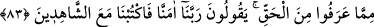
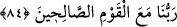

topluluk olmasına rağmen onlar çokluk bakımından hristiyanlar kadar olamamışlardır.
Onlar az olduklarından yahûdîlerin bütünü içinde bir hüküm ifade etmez.
“Ve onlar büyüklük taslamazlar.” Hakkı gördüklerinde onu kabul ederler. Bu konuda
yahûdîler gibi kibirli değil, mütevazıdırlar.
Bu âyet, tevâzu, ilim ve amel sahibi olmak, şehvetten yüz çevirmek gibi hasletlerin
kâfirde de olsa güzel sıfatlar olduğuna delalet eder.
Şeyhim Allâme Osman Fazlî Efendi’nin yanında zimmîlerden birinin bazı güzel
hasletlerinden söz edildi. O: “Bu, ezelî saâdetin izlerindendir. Bu hasletin kendisini
îmana ve tevhîde çağırması, sonunda da felah bulması umulur.” dedi.
Hâfız şöyle der:
Bir iş yapayım ki utanç ortaya çıkmasın
Birgün ki can elbisesini ahirette dikeyim.
83. Rasûle indirileni duydukları zaman, tanış çıktıkları gerçekten dolayı
gözlerinden yaşlar boşandığını görürsün. Derler ki: “Rabbimiz! Îman ettik, bizi
(hakka) şâhit olanlarla beraber yaz.”
Bahsedilen Hristiyanların mü’minlere sevgice daha yakın olmalarının bir diğer sebebi
de şudur: “Elçiye indirilen” Kur’ân’ı “dinledikleri zaman, tanıdıkları gerçekten
dolayı gözlerinden yaşlar boşandığını görürsün.” Bu, onların yumuşak kalpli
olduklarını, Allah’tan çok korktuklarını, Hakk’ı işitince hemen kabul ettiklerini, ona
karşı büyüklük taslamadıklarını göstermektedir. Ağlamanın şiddetini ifade etmek için
“gözleri yaşla dolar” ifadesi yerine “gözlerinden yaşlar boşanır” ifadesi
kullanılmıştır. “Yaşlar boşanır” cümlesi gözlerin hâlini beyan eder. Tanıdıkları hak ile
karşılaşınca ağlamanın yanında dua ederek “derler ki: Rabbimiz,” bu Kur’ân’a
“inandık, bizi” onun hak olduğuna şâhitlik eden “şâhitlerle beraber yaz!”
84. “Rabb’imizin bizi iyiler arasına katmasını umarken, neden Allah’a ve bize
gelen hakka îman etmeyelim?”
“Biz, Rabb’imizin bizi iyiler arasına katmasını umarken neden Allah’a ve bize